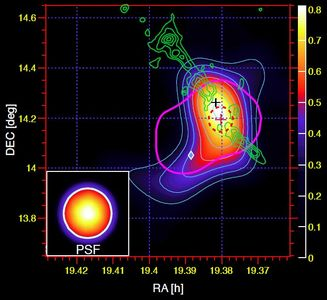

高エネルギーガンマ線グループ - 京都大学宇宙線研究室


研究
高エネルギーガンマ線グループではCTA,MAGIC,Fermiといったガンマ線望遠鏡を用いて宇宙の高エネルギー現象を研究しています。
超高エネルギーガンマ線観測による宇宙高エネルギー現象の研究
宇宙では我々の銀河系内あるいは銀河系外の天体からいろいろな波長（＝エネルギー）の電磁波が放射されています。これらの電磁波を観測することで宇宙のいろいろな天体現象を理解することができます。エネルギーの低い帯域では電波や可視光、赤外線の観測があり、さらにエネルギーが高くなるとX線、ガンマ線での観測となります。私たちはガンマ線観測の中でももっともエネルギーの高い、超高エネルギーガンマ線（100 GeV以上）を観測し、天体現象の研究を行っています。
超新星爆発や、活動銀河核から吹き出されるジェットでは陽子や電子が高いエネルギーまで加速されると考えられています。加速された陽子や電子はまわりの物質と相互作用してガンマ線を放射するので、ガンマ線を観測することで陽子や電子を高いエネルギーまで加速するような激しい宇宙の高エネルギー現象を探ることができます。
銀河系内では超新星残骸やパルサー、連星系、銀河系外では活動銀河核やガンマ線バーストといった多様な天体がガンマ線を放射しており、激しく活動する宇宙の様々な姿にガンマ線をプローブとしてせまることができます。
地球には宇宙から高エネルギーの陽子や原子核といった宇宙線が降り注いでいます。そのエネルギーは10の8乗 eVから10の20乗 eVにも及ぶ非常に広い範囲に渡っています。素粒子の加速器実験ではLHCが重心系で10の13乗 eVのエネルギーまで陽子を加速して衝突させることができますが、宇宙線は人類が加速器でつくりだせるエネルギーより最大で7桁も大きいエネルギーまで加速されています。宇宙線は1912年に存在が発見されましたが、発見から100年たった現在でもどこで宇宙線がつくられているのかは完全に解明されていません。加速された宇宙線が相互作用を起こすとガンマ線を放射するため、ガンマ線を観測することで宇宙線をつくりだしている「宇宙の巨大加速器」を探すことができます。
宇宙の加速器の候補のひとつは活動銀河核です。活動銀河核の中心には太陽質量の100万倍から10億倍の超巨大ブラックホールがあり、そこにガスが落ち込んで重力エネルギーを開放して光っていると考えられています。活動銀河核からはジェットとよばれる相対論的速度のプラズマの流れが吹き出している様子が観測されていますが、その形成の仕組みは明らかではありません。活動銀河核から放射されるガンマ線を観測することでブラックホール周辺での粒子加速や相対論的ジェットの物理にせまることができます。
我々の宇宙を構成しているもののうち、我々が知っている陽子や中性子などの通常の物質は宇宙の組成の5%しか説明ができず、残りの27%がダークマター（暗黒物質）と呼ばれる素粒子の標準理論の枠組を超えた未知の物質、68%がダークエネルギーであるといわれています。ダークマターは重力相互作用により宇宙初期の密度の高いところに集まり、宇宙の大規模な構造の形成にかかわったと考えられています。ダークマターはダークマター自身の反粒子と対消滅しガンマ線をつくるので、我々の銀河中心や矮小銀河のようなダークマターの密度が高いと考えられている領域をガンマ線で観測することで、ダークマターの対消滅のシグナルを探すことができます。
超新星残骸やパルサー、連星系、活動銀河核、ガンマ線バーストといった多様な天体、宇宙線の起源やブラックホール近傍での粒子加速、ダークマター探索といった新しい物理に観測的にせまるため、研究に取り組んでいます。

Aleksic, J. et al., A&A 541, 2012
MAGIC望遠鏡で観測された超新星残骸W51C。カラースケールはガンマ線放射、緑のコントアは電波で観測された分子雲、赤の点線は超新星残骸と相互作用しているガスの領域。超新星残骸で加速された宇宙線と分子雲が衝突してガンマ線をつくっていることを示唆しています。

Aleksic, J. et al., Science 346, 2014
活動銀河核IC 310の中心にある超巨大ブラックホール近傍での粒子加速のモデル図。MAGIC望遠鏡はIC 310から5分より早いスケールで変動するガンマ線放射のフレアを観測しました。この激しい変動は回転するブラックホールの極軸付近の磁気圏に生成される電場による粒子加速を示唆し、ブラックホール近傍での粒子加速の様子を探るための重要な手がかりを与えました。

Aleksic, J. et al., JCAP 02, 2014
MAGIC望遠鏡による矮小銀河Segue 1周辺のガンマ線放射の有意度マップ。MAGIC望遠鏡は矮小銀河Segue 1を約160時間観測し、ダークマター探索を行いました。有意なガンマ線放射は検出されず、ダークマターの対消滅の断面積に上限を与えました。
ガンマ線望遠鏡カメラの開発
高エネルギーガンマ線は物質と相互作用して電子陽電子を対生成し、これを利用して観測されます。10 MeVから100 GeVの帯域では衛星に載せた検出器が用いられ、現在ではFermi衛星のLAT検出器が観測を行っています。100 GeV以上の帯域ではより大きな検出器が必要とされるため、地上につくられた大気チェレンコフ望遠鏡と呼ばれる装置により観測します。超高エネルギーガンマ線は地球大気中で対生成を繰り返し空気シャワーという電子陽電子の粒子シャワーをつくります。空気シャワー中の電子あるいは陽電子が走るときにチェレンコフ光と呼ばれる青色の光を放射し、このチェレンコフ光を地上の鏡で集めて焦点にあるカメラで撮像することで空気シャワーのイメージをとらえ、到来したガンマ線を再構成することができます。
チェレンコフ望遠鏡によるガンマ線観測は1989年にWhipple望遠鏡がかに星雲からのガンマ線放射を初めて検出して以来進歩を重ね、現在ではH.E.S.S., MAGIC, VERITASといった世界各地のチェンレンコフ望遠鏡が数にして100以上の超高エネルギーガンマ線天体を検出してきました。我々はMAGICグループに参加し観測データ解析をする一方、次の世代の観測装置であるCTAの望遠鏡カメラ開発を行っています。CTAは約10 km^2の範囲にチェンレンコフ望遠鏡を10台以上の規模で並べることでガンマ線観測の感度を現行の装置に比べ1桁上げる、究極のガンマ線観測天文台で、全天を観測するために南と北の2サイトに建設されます。
CTAの多数の望遠鏡アレイのうち、衛星観測ともオーバーラップするおよそ100 GeVの帯域のガンマ線を観測するのがLSTと呼ばれる口径23 mの巨大な鏡を持つ望遠鏡です。LSTは南サイトと北サイトに4台ずつ建設されます。我々はLSTの焦点面カメラの開発、特に光検出器である光電子増倍管の信号読み出し回路の開発を行っています。LSTの焦点面カメラには1台あたり1855本もの光電子増倍管が並べられ、7本を1モジュールとして読み出し回路に接続されます。読み出し回路は7本の光電子増倍管からの信号波形をサンプリング、デジタル変換して記録し、そのデータをギガビットイーサネット経由でサーバへ送信します。空気シャワーからのチェレンコフ光は数ナノ秒という短い時間だけ光りますが、我々の開発した読み出し回路はこの一瞬の信号波形をギガヘルツサンプリングで記録する高速の電子回路となっています。
CTAは世界の1000人以上の研究者が参加して「世界でひとつの究極感度の超高エネルギーガンマ線望遠鏡」をつくり、観測・研究をするプロジェクトです。海外の共同研究者と協力しながら、この究極のガンマ線望遠鏡のカメラを私たちの研究室が中心となってつくっています。現在、LSTの1台目がスペイン領カナリア諸島で建設中で、2018年9月に初観測を迎える予定です。

http://www.cta-observatory.jp/
CTAの完成イメージ。口径の異なる大中小の望遠鏡をアレイ状に並べ、広いエネルギーレンジと究極の感度を達成します。
CTAのLST（大口径望遠鏡）のカメラで使用する光電子増倍管（PMT）の信号波形読み出し回路。7本のPMTの信号波形をギガヘルツで高速サンプリングし、ギガビットイーサネットでデータを転送します。

読み出し回路19モジュールによるミニカメラ。実際のカメラは265モジュール、PMT1855本のスケールになります。
メンバー
| 窪 秀利 | 准教授 |
| 藤井 俊博 | 特定助教 |
| 野崎 誠也 | D2 |
| 岡 知彦 | M2 |
| 梶原 侑貴 | M2 |
| 今川 要 | M1 |